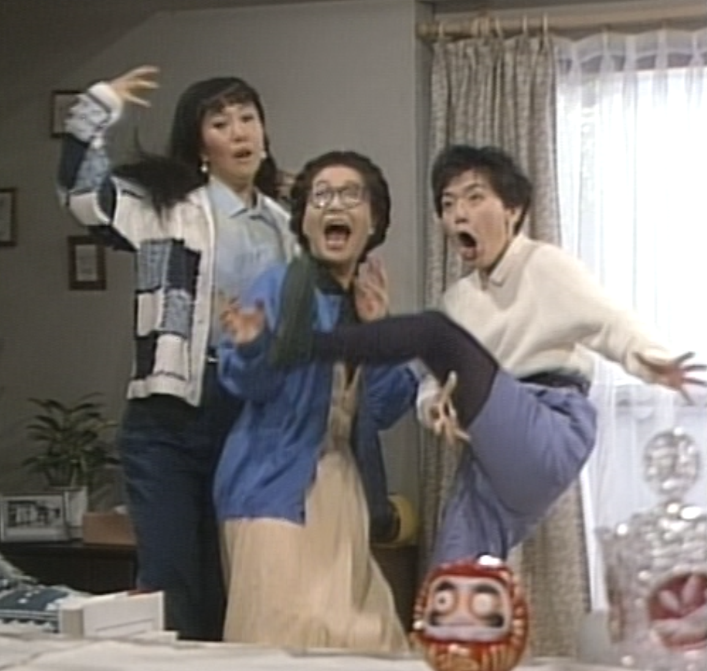

ORIGINAL
やっぱり猫が好き
三姉妹の会話、妙な事件、食卓、来客、ケンカ。
番組の魅力をファン目線で振り返ります。
YAPPARI NEKO GA SUKI — UNOFFICIAL FAN SITE
「やっぱり猫が好き」を勝手に振り返り、勝手に語り、
ときどき新しい“三姉妹の話”まで書いてしまうファンサイトです。
少しでもドラマの楽しい雰囲気を味わってもらえると嬉しいです。

ORIGINAL
三姉妹の会話、妙な事件、食卓、来客、ケンカ。
番組の魅力をファン目線で振り返ります。
FAN FICTION
まゆか、いさ子、みさを、そして猫のモチャコ。
あの空気感を勝手に受け継いだ会話劇です。
なんでもない日常からナンセンスな出来事まで。様々なお笑いがマンションの１室だけで展開される匠さと面白さが素晴らしいです。
台本なのかアドリブなのか区別がつかないほど、本当の姉妹のようなもたいさん、室井さん、小林さんの掛け合いが素敵。
人を傷つけないお笑いが、ほっこりとした安心感を与えてくれます。世の中にゆとりがあった時代。こんな世界にいられたらなぁとつい思ってしまいます。
LATEST